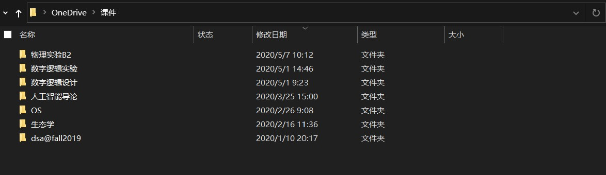

文件系统概述
为啥需要文件/文件系统？
能够”持久存储数据的设备”, 可能包括: 机械硬盘(HDD, hard disk drive), 固态硬盘(solid-state storage device), 光盘（加上它的驱动器），软盘，U盘，甚至磁带或纸带等等。一般来说，每个设备上都会连出很多针脚（这些针脚很可能符合某个特定协议，如USB协议，SATA协议），它们都可以按照事先约定的接口/协议把数据从设备中读到内存里，或者把内存里的数据按照一定的格式储存到设备里。
我们希望做到的第一件事情，就是把以上种种存储设备当作“同样的设备”进行使用。不管机械硬盘的扇区有多少个，或者一块固态硬盘里有多少存储单元，我们希望都能用同样的接口进行使用，提供“把硬盘的第a到第b个字节读出来”和“把内存里这些内容写到硬盘的从第a个字节开始的位置”的接口，在使用时只会感受到不同设备速度的不同。否则，我们还需要自己处理什么SATA协议，NVMe协议啥的。处理具体设备，具体协议并向上提供简单接口的软件，我们叫做设备驱动(device driver)，简称驱动。
文件的概念在我们脑子里根深蒂固，但“文件”其实也是一种抽象。理论上，只要提供了上面提到的读写两个接口，我们就可以进行编程，而并不需要什么文件的概念。只要你自己在小本本上记住，你的某些数据存储在硬盘上从某个地址开始的多么长的位置，以及硬盘上哪些位置是没有被占用的。编程的时候，如果用到/修改硬盘上的数据， 就把小本本上记录的位置给硬编码到程序里。
但这很不灵活！如果你的小本本丢了，你就再也无法使用硬盘里的数据了，因为你不知道那些数据都是谁跟谁。另外，你也可能一不小心修改到无关的数据。最后，这个小本本经常需要修改，你很容易出错。
显然，我们应该把这个小本本交给计算机来保存和自动维护。这就是 文件系统。
我们把一段逻辑上相关联的数据看作一个整体，叫做文件。
除了硬盘，我们还可以把其他设备（如标准输入，标准输出）看成是文件，由文件系统进行统一的管理。之前我们模拟过一个很简单的文件系统，用来存放内存置换出的页面（参见lab3 页面置换）。现在我们要来实现功能更强大也更复杂的文件系统。
虚拟文件系统
我们可以实现一个虚拟文件系统（virtual filesystem, VFS）, 作为操作系统和更具体的文件系统之间的接口。所谓“具体文件系统”，更接近具体设备和文件系统的内部实现，而“虚拟文件系统”更接近用户使用的接口。
电脑上本地的硬盘和远程的云盘(例如清华云盘，OneDrive）的具体文件管理方式很可能不同，但是操作系统可以让我们用相同的操作访问这两个地方的文件，可以认为用到了虚拟文件系统。

例如，远程的云盘OneDrive，在Windows资源管理器(可以看作是虚拟文件系统提供给用户的接口)里，看起来和本地磁盘上的文件夹一模一样，也可以做和本地的文件夹相同的操作，复制，粘贴，打开。虽然背后有着网络传输，可能速度会慢，但是接口一致。（理论上可以在OneDrive的远程存储服务器上使用linux操作系统）。
在Linux系统中，如
/floppy是一块MS-DOS文件系统的软盘的挂载点，/tmp/test是Ext2文件系统的一个目录，我们执行cp /floppy/TEST /tmp/test, 进行目录的拷贝，相当于执行下面这段代码：inf = open("/floppy/TEST", O_RDONLY, 0); outf = open("/tmp/test", O_WRONLY|O_CREAT|O_TRUNC, 0600); do { i = read(inf, buf, 4096); write(outf, buf, i); } while (i); close(outf); close(inf);
对于不同文件系统的目录，我们可以使用相同的open, read, write, close接口，好像它们在同一个文件系统里一样。这是虚拟文件系统的功能。
扩展
最早的虚拟文件系统： Sun Microsystems’s SunOS ，1986
linux的VFS支持虚拟块设备（virtual block devices), 可以把当前文件系统中的某个文件，认为是”一块具备虚拟文件系统的磁盘”进行挂载，也就是说这个文件里包含一个完整的文件系统，如同“果壳里的宇宙”。
这种设备也叫做“loop device”，可以用来简易地在现有文件系统上进行磁盘分区。
扩展
When a filesystem is mounted on a directory, the contents of the directory in the parent filesystem are no longer accessible, because every pathname, including the mount point, will refer to the mounted filesystem. However,the original directory’s content shows up again when the filesystem is unmounted. This somewhat surprising feature of Unix filesystems is used by system administrators to hide files; they simply mount a filesystem on the directory containing the files to be hidden.
《understanding linux kernel》
UNIX文件系统
ucore 的文件系统模型和传统的 UNIX文件系统类似。
UNIX 文件中的内容可理解为是一段有序的字节 ，占用磁盘上可能连续或不连续的一些空间（实际占用的空间可能比你存储的数据要多）。每个文件都有一个方便应用程序识别的文件名（也可以称作路径path），另外有一个文件系统内部使用的编号（用户程序不知道这个底层编号）。你可以对着一个文件又读又写（写的太多的时候可能会自动给文件分配更多的硬盘存储空间），也可以创建或删除文件。
**目录(directory)**是特殊的文件，一个目录里包含若干其他文件或目录。
在 UNIX 中，文件系统可以被安装在一个特定的文件路径位置，这个位置就是挂载点（mount point)。所有的已安装文件系统都作为根文件系统树中的叶子出现在系统中。比如当你把U盘插进来，系统检测到U盘之后，会给U盘的文件系统一个挂载点，这个挂载点是原先的UNIX操作系统的叶子，但也可以认为是U盘文件系统的根节点。
UNIX的文件系统中，有一个通用文件模型（Common File Model），所有具体的文件系统（不管是Ext4, ZFS还是FAT)，都需要提供通用文件模型所约定的行为。我们可以认为，通用文件模型是面向对象的，由若干对象(Object)组成，每个对象有成员属性和函数接口。类UNIX系统的内核一般使用C语言实现，”成员函数“一般体现为函数指针。
通用文件模型定义了一些对象:
超级块(superblock)：存储整个文件系统的相关信息。对于磁盘上的文件系统，对应磁盘里的文件系统控制块(filesystem control block)
索引节点（inode)：存储关于某个文件的元数据信息（如访问控制权限、大小、拥有者、创建时间、数据内容等等），通常对应磁盘上的文件控制块（file control block). 每个索引节点有一个编号，唯一确定文件系统里的一个文件。
文件(file): 这里定义的file object不是指磁盘上的一个”文件“， 而是指一个进程和它打开的一个文件之间的关系，这个对象存储在内核态的内存中，仅当某个进程打开某个文件的时候才存在。
目录项（dentry）：维护从”目录里的某一项“到”对应的文件“的链接/指针。一个目录也是一个文件，包含若干个子目录和其他文件。从某个子目录、文件的名称，对应到具体的文件/子目录的地址(或者索引节点inode)的链接，通过**目录项(dentry)**来描述。
上述抽象概念形成了 UNIX 文件系统的逻辑数据结构，并需要通过一个具体文件系统的架构，把上述信息映射并储存到磁盘介质上，从而在具体文件系统的磁盘布局（即数据在磁盘上的物理组织）上体现出上述抽象概念。比如文件元数据信息存储在磁盘块中的索引节点上。当文件被载入内存时，内核需要使用磁盘块中的索引点来构造内存中的索引节点。又比如dentry对象在磁盘上不存在，但是当一个目录包含的某一项（可能是子目录或文件）的信息被载入到内存时，内核会构建对应的dentry对象，如/tmp/test这个路径，在解析的过程中，内核为根目录/创建一个dentry对象，为根目录的成员tmp构建一个dentry对象，为/tmp目录的成员test也构建一个dentry对象。
ucore 文件系统总体介绍
我们将在ucore里用虚拟文件系统管理三类设备：
硬盘，我们管理硬盘的具体文件系统是Simple File System（地位和Ext2等文件系统相同）
标准输出（控制台输出），只能写不能读
标准输入（键盘输入），只能读不能写
其中，标准输入和标准输出都是比较简单的设备。管理硬盘的Simple File System相对而言比较复杂。
我们的“硬盘”依然需要通过用一块内存来模拟。
lab8的Makefile和之前不同，我们分三段构建内核镜像。
sfs.img: 一块符合SFS文件系统的硬盘，里面存储编译好的用户程序
swap.img: 一段初始化为0的硬盘交换区
kernel objects: ucore内核代码的目标文件
这三部分共同组成ucore.img, 加载到QEMU里运行。ucore代码中，我们通过链接时添加的首尾符号，把swap.img和sfs.img两段“硬盘”（实际上对应两段内存空间）找出来，然后作为“硬盘”进行管理。
注意，我们要在ucore内核开始执行之前，构造好“一块符合SFS文件系统的硬盘”，这就得另外写个程序做这个事情。这个程序就是tools/mksfs.c。它有500多行，如果感兴趣的话可以通过它了解Simple File System的结构。
ucore 模仿了 UNIX 的文件系统设计，ucore 的文件系统架构主要由四部分组成：
通用文件系统访问接口层：该层提供了一个从用户空间到文件系统的标准访问接口。这一层访问接口让应用程序能够通过一个简单的接口获得 ucore 内核的文件系统服务。
文件系统抽象层：向上提供一个一致的接口给内核其他部分（文件系统相关的系统调用实现模块和其他内核功能模块）访问。向下提供一个同样的抽象函数指针列表和数据结构屏蔽不同文件系统的实现细节。
Simple FS 文件系统层：一个基于索引方式的简单文件系统实例。向上通过各种具体函数实现以对应文件系统抽象层提出的抽象函数。向下访问外设接口
外设接口层：向上提供 device 访问接口屏蔽不同硬件细节。向下实现访问各种具体设备驱动的接口，比如 disk 设备接口/串口设备接口/键盘设备接口等。
对照上面的层次我们再大致介绍一下文件系统的访问处理过程，加深对文件系统的总体理解。假如应用程序操作文件（打开/创建/删除/读写），首先需要通过文件系统的通用文件系统访问接口层给用户空间提供的访问接口进入文件系统内部，接着由文件系统抽象层把访问请求转发给某一具体文件系统（比如 SFS 文件系统），具体文件系统（Simple FS 文件系统层）把应用程序的访问请求转化为对磁盘上的 block 的处理请求，并通过外设接口层交给磁盘驱动例程来完成具体的磁盘操作。结合用户态写文件函数 write 的整个执行过程，我们可以比较清楚地看出 ucore 文件系统架构的层次和依赖关系。

ucore 文件系统总体结构
从 ucore 操作系统不同的角度来看，ucore 中的文件系统架构包含四类主要的数据结构, 它们分别是：
超级块（SuperBlock），它主要从文件系统的全局角度描述特定文件系统的全局信息。它的作用范围是整个 OS 空间。
索引节点（inode）：它主要从文件系统的单个文件的角度它描述了文件的各种属性和数据所在位置。它的作用范围是整个 OS 空间。
目录项（dentry）：它主要从文件系统的文件路径的角度描述了文件路径中的一个特定的目录项（注：一系列目录项形成目录/文件路径）。它的作用范围是整个 OS 空间。对于 SFS 而言，inode(具体为 struct sfs_disk_inode)对应于物理磁盘上的具体对象，dentry（具体为 struct sfs_disk_entry）是一个内存实体，其中的 ino 成员指向对应的 inode number，另外一个成员是 file name(文件名).
文件（file），它主要从进程的角度描述了一个进程在访问文件时需要了解的文件标识，文件读写的位置，文件引用情况等信息。它的作用范围是某一具体进程。
如果一个用户进程打开了一个文件，那么在 ucore 中涉及的相关数据结构和关系如下图所示：